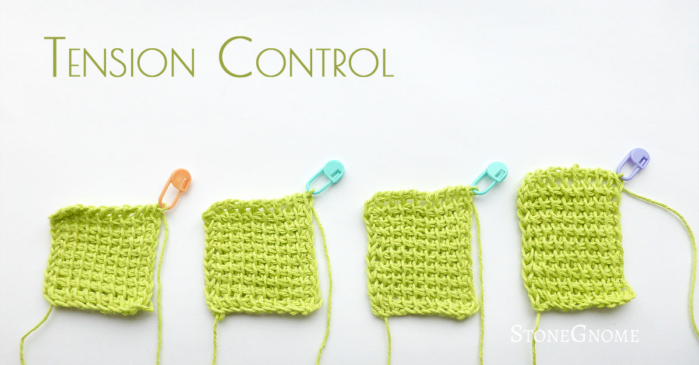
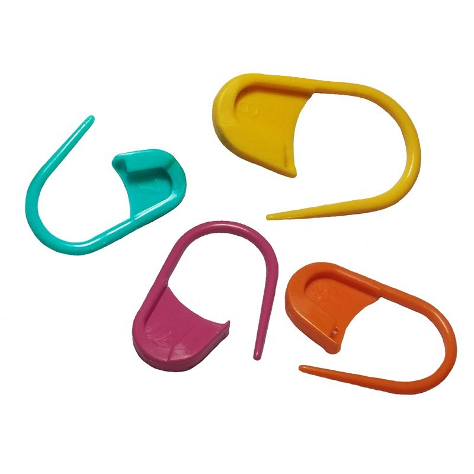
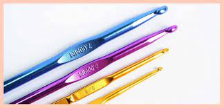
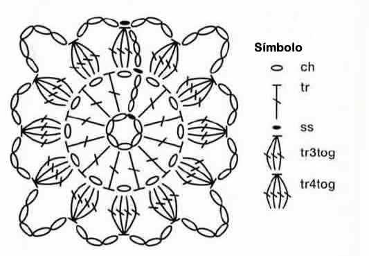

Parte de aprender a tejer crochet incluye no solo dominar los puntos básicos, sino también conocer algunos trucos que pueden hacer una gran diferencia en la calidad y el resultado final de tus proyectos. Desde técnicas para mejorar la tensión del hilo hasta consejos para evitar errores comunes, aquí te compartimos algunos trucos que todo tejedor debería conocer:
Mantener una tensión consistente
La tensión a la hora de tejer es de suma importancia para que los tejidos no se vean flojos o se puedan destruir facilmente.
Utilizar marcadores de puntos
Cuando empezamos a tejer proyectos muy grandes es difícil llevar la cuenta de cuentos puntos llevamos y si no contamos estos puede que nuestro tejidos no salgan como esperamos. Es por eso que se utilizan los marcadores, para llevar un control, manejar de una mejor manera lo que llevamos y evitar errores.
Selecciona el Ganchillo Correcto
Elegir el tamaño adecuado del ganchillo es esencial para hacer un buen tejido, este depende del tamaño de la lana. Si utilizamos un tamaño de ganchillo más grande nuestro tejido quedará mas suelto, mientras que uno más pequeño los hace más apretados. Normalmente en la etiqueta de las lanas dice el tamaño de ganchillo adecuado para ese tipo en específico.
Cuida la Postura y el Agarre
No solo es importante cuidar los detalles en el tejido, sino también a la hora de tejer debemos de tener cuidado cómo y dónde lo hacemos. Debemos mantener una postura cómoda y un agarre relajado del ganchillo y el hilo para evitar fatiga y lesiones en las manos.
Lee Detenidamente los Patrones
Antes de comenzar, asegúrate de entender completamente las instrucciones del patrón. Subraya o marca partes clave para seguir el patrón con precisión.
¿Cómo Corregir Errores en Crochet?
Incluso los tejedores más experimentados cometen errores de vez en cuando. La clave está en saber cómo corregir esos errores de manera eficiente y seguir adelante con tu proyecto. Aquí te dejamos algunos consejos útiles para corregir errores comunes en crochet:
1. Deshacer Puntadas Incorrectas
¿Qué hacer cuando te das cuenta de que has cometido un error en tus puntadas?
- Deshacer (Frogging): Si te das cuenta de que has cometido un error, no dudes en deshacer las puntadas hasta llegar al punto donde ocurrió el error. Deshacer puntadas, también conocido como "frogging", es una práctica común en el crochet. Simplemente tira del hilo para deshacer las puntadas una por una hasta llegar al error.
- Deshacer Parcialmente: Si el error está muy atrás, podrías optar por deshacer solo la parte necesaria y luego volver a tejer.
2. Evitar y Corregir Aumentos y Disminuciones Incorrectas
¿Qué hacer si te das cuenta de que has hecho un aumento o disminución incorrecta?
- Identificar el Error: Verifica cada vuelta para asegurarte de que has hecho el número correcto de aumentos o disminuciones. Si encuentras un error, deshaz las puntadas incorrectas y corrige el número de aumentos o disminuciones.
- Mantener la Cuenta: Usa un contador de puntadas o un marcador de vueltas para llevar un seguimiento preciso y evitar errores en el futuro.
3. Corregir la Tensión del Hilo
¿Qué hacer si notas que la tensión de tu hilo es inconsistente?
- Practica la Tensión Uniforme: La tensión inconsistente puede causar puntadas desiguales. Practica mantener la tensión uniforme en todo momento. Si notas que tu tensión es inconsistente, deshaz las puntadas afectadas y vuelve a tejerlas con una tensión más uniforme.
- Ajustar el Ganchillo: Si la tensión sigue siendo un problema, considera usar un ganchillo de diferente tamaño. Un ganchillo más grande o más pequeño puede ayudarte a lograr la tensión deseada.
4. Corregir Errores en los Patrones
¿Qué hacer si te das cuenta de que has seguido mal un patrón?
- Revisar las Instrucciones: Antes de comenzar, lee y entiende completamente el patrón. Si encuentras un error mientras sigues el patrón, revisa las instrucciones para asegurarte de que las estás siguiendo correctamente.
- Comunidades y Foros: Únete a comunidades de crochet en línea donde puedes pedir ayuda y encontrar soluciones a errores en los patrones.
5. Herramientas para Corregir Errores
¿Qué herramientas pueden ayudarte a corregir errores más fácilmente?
- Ganchillos de Diferentes Tamaños: Tener una variedad de ganchillos de diferentes tamaños puede ayudarte a ajustar la tensión y corregir puntadas.
- Marcadores de Puntadas: Usa marcadores de puntadas para mantener la cuenta y marcar puntos importantes, evitando errores en el proceso.
- Agujas de Crochet con Luz: Estas herramientas pueden facilitar la corrección de errores, especialmente en condiciones de poca luz.